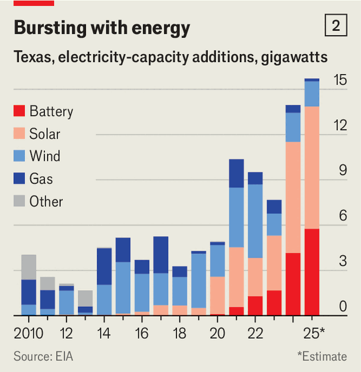

Texas is America Inc’s new centre of gravity
Exxon’s reincorporation is one more feather in the state’s cowboy hat
June 4th 2026

“Just when I thought I got him to fall in love with Tennessee, I shoulda known better than to take him back to Abilene.” So laments Ella Langley in “Choosin’ Texas”, a song that has ranked near the top of America’s music charts throughout 2026. Some of those listens may be coming from policymakers elsewhere in the country. Much like Ms Langley, they are losing to Texas.

On May 27th ExxonMobil’s shareholders approved a plan to cut the oil giant’s ties with New Jersey and reincorporate in Texas, where it has long had its headquarters. It is not alone. According to CBRE, a property firm, at least 184 companies shifted their headquarters to Austin, Dallas or Houston between 2020 and 2025, among them Tesla, a car company, and Caterpillar, a maker of construction equipment (see chart 1).
Texas is steadily establishing itself as America Inc’s new centre of gravity. No state receives more business investment or is adding more people to its population. From 2020 to 2025 it created roughly a fifth of all net new jobs in the country.
In the early 2020s Texas was luring in remote workers fleeing high taxes, exorbitant house prices and bad policies in America’s coastal metropolises, while benefiting from the Biden administration’s subsidies for green energy and chipmaking facilities. Now the state’s dominance in energy has made it a major beneficiary of the data-centre boom. Meanwhile, its technology and finance ecosystems have been deepening. This summer it will ring in its first standalone bourse, the Texas Stock Exchange, joining outposts of the New York Stock Exchange (NYSE) and Nasdaq already operating in the state. (Donald Trump has called the NYSE’s new branch an “UNBELIEVABLY BAD THING” for his hometown of New York, even if his social-media venture was the first business to list on it.) The state’s appeal to yuppies is also growing with every stream of a country song. It seems there is no part of America with which Texas is not competing.

To understand its ascendancy, start in Houston, heart of the Texan energy industry. Its oil-and-gas barons have been raking in profits as a result of the Iran war. But over the past few years the state has also become a hub for green energy (see chart 2). This year it is expected to build two-fifths of all new utility-scale solar in America, a technology for which its wide-open flatlands are ideal. (One project, Tehuacana Creek, is adding 837 megawatts, making it the largest that will come online in America this year.)
This investment bonanza has caused some hiccups along the way. In 2021 Texas’s grid suffered a series of critical failures during a winter storm. But the episode led to modernisation efforts—including big investments in battery storage—that state officials hope will position the system to deal with soaring demand better than many other parts of the country. So far the signs are positive. Despite huge increases in power consumption, Texas’s retail energy prices are middling among American states. Since the crisis its grid has had only one emergency alert, notes Judd Messer of the Advanced Power Alliance, a green-energy lobbying group.
What is more, many of the data centres being built in Texas are powered off-grid, meaning they do not need to wait for an interconnection. That includes the gas-fuelled mega-project in Shackelford County commissioned by OpenAI, maker of ChatGPT, and Oracle, a wannabe hyperscaler. About half of the off-grid energy projects in America are based in Texas, says David Brown of Wood Mackenzie, a research firm.
Loose planning rules help. Most of Texas’s counties have limited control over development on land outside city limits, such as the Grimes County site where Mr Musk plans to build Terafab, a semiconductor facility the size of a European microstate. A sales-tax exemption for data centres, introduced in 2013, has further added to the appeal of building them in the state. JLL, another property firm, reckons that Texas may overtake Virginia, currently the state with the largest data-centre capacity, as soon as 2030.

Abundant energy and the freedom to build have also fuelled Austin’s rise as a hub for advanced hardware. Its “Silicon Hills” are home both to established businesses, such as Dell, a computer-maker, and to buzzy startups, such as Apptronik, a robotics firm. Venture-capital (VC) investment in Austin reached a record $7.4bn last year, according to PitchBook, a data provider (see chart 3). The city is now America’s fifth-most active for VC investment, up from tenth a decade ago. One floor of its largest startup incubator, Capital Factory, also hosts an outpost of the American army’s innovation unit.
The investment wave in Texas has helped lure the financial sector to Dallas’s “Y’all Street”. Goldman Sachs is building a $500m campus in the city with room for 5,000 employees. JPMorgan Chase, America’s biggest bank, now has more staff in Texas than in New York. There is plenty for them to do. Nasdaq’s Texas branch, which opened in March, will host SpaceX, a rocketry firm, in conjunction with its sister exchange in New York.
Corporate lawyers in Dallas and other Texan cities will be just as busy. State officials are eager to supplant Delaware as America’s corporate-law hub. In 2024 they established the Texas Business Court, presided over by expert judges capable of handling even the most complex disputes. Last year the state also introduced a measure to allow firms to prevent shareholders with a stake of less than 3% from suing them, and another to let only large shareholders put forward proxy proposals.
Those changes, along with other drawcards such as low business taxes, are luring ever more companies to Texas. Bryan Hughes, a state senator and one of the architects of the business court, predicts that the reincorporation of a business of Exxon’s size will cause a rush southwards: “The ice is broken.”
On South Congress Avenue, one of Austin’s upmarket shopping streets, long lines stretch outside shops selling cowboy boots and shiny belt buckles. They reflect another of Texas’s less-appreciated assets: its growing soft power.
Kendra Scott, a jewellery firm last valued in 2016 at over $1bn, is but one example of the state’s growing list of successful brands. In 2023 it launched Yellow Rose, a cowboy-chic sub-brand that has been expanding rapidly as the ranch aesthetic has become trendy. (Even the Princess of Wales has recently donned cowboy boots.) Rodeo style is “not just a Texas thing” any longer, says Ms Scott, founder of the brand. She points out that Louis Vuitton now sells Western-themed products and singers such as Post Malone have begun making country music.
Ms Scott’s is not the only Texan brand with national ambitions. Companies such as Yeti, a maker of supersize water bottles, and Buc-ee’s, a roadside convenience store, are fast expanding outside the state. They serve as advertisements for the Texan way of life much as surf brands did for California or preppy retailers like Ralph Lauren did for the WASPy north-east.
Texas’s growing cultural appeal is making it easier for firms to convince workers to move there, notes Richard Florida of the University of Toronto. That matters, because securing skilled workers will be crucial to Texas’s continued ascent. Cultivating homegrown talent is a big part of Texas’s economic plan, but in the short term the state will need to lure superstars from elsewhere. Abundant housing and low personal taxes only go so far. Many workers are put off by parts of the state’s political agenda. Blue enclaves help. Showy displays of lib-owning, including those gleefully pursued by Texas’s attorney-general (and Republican senatorial candidate) Ken Paxton, do not.
Texas’s success should worry those in New York and California monitoring their tax take. At the same time it has spawned a number of imitators. Legislators in North Carolina have passed a plan to get rid of its corporate-income tax by 2030. Tennessee has copied Texas’s strategy of offering firms shovel-ready mega-sites. Nevada is trying to launch its own business court. But none is close to competing with the Lone Star State, argues Michael Sury of the University of Texas at Austin. “Texas had the seeds already planted, but as we’ve started to attract more capital and firms, we’re at an inflection point.” ■
To track the trends shaping commerce, industry and technology, sign up to “The Bottom Line”, our weekly subscriber-only newsletter on global business.